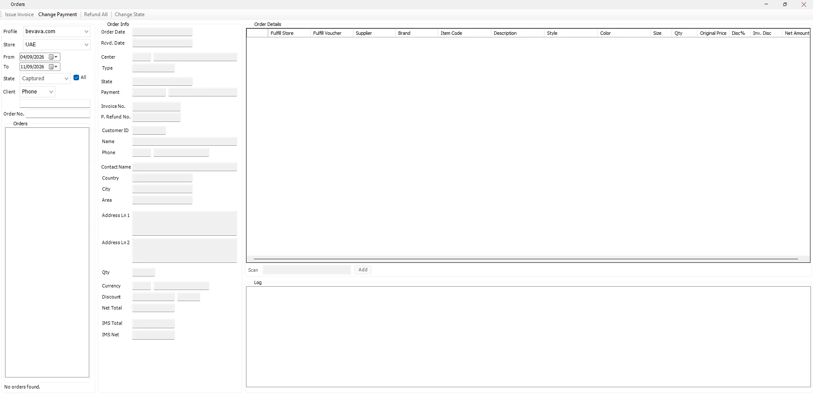

Incoming Orders
Incoming Orders is the operational center for online orders. It combines the online order, customer/delivery data, merchandise, fulfillment source, IMS totals, order history and the actions that create the corresponding IMS Sales, Refund or Exchange transactions.

Find an order
| Filter | Purpose |
|---|---|
| Profile | Selects the online profile/channel defined in Manage Profiles. |
| Store | Selects one Shopify Access Store/market inside that profile. |
| From / To | Order-date range. The screen initially loads approximately the last seven days. |
| State / All | Filters the order list by workflow state or includes all states. |
| Client | Searches customers using the available client criteria such as ID, Name or Phone. |
| Order No. | Locates a specific online Order Reference. |
How orders arrive from Shopify
For API-connected Stores, the background Shopify Integration Server retrieves Shopify orders whose fulfillment status is unfulfilled. It prevents duplicate imports, reads each Shopify variant to obtain its barcode/SKU/options and prices, and stores the Shopify Order Number as the IMS Order Reference.
The integration also maps the order currency and payment information, represents any Shopify shipping charge with the Store's configured Shipping Item, and for Kuwait customers can match/create the Loyalty Customer and delivery address using the customer's mobile number.
If a Shopify barcode is missing from IMS, the server can create the item when the Shopify Vendor maps unambiguously to an IMS brand belonging to a Just-In-Time supplier. Normal IMS-stock items then continue into automatic Store fulfillment.
Order information
Selecting an order loads both the original online information and the values IMS will use operationally.
| Area | Information |
|---|---|
| Order | Order Date, Received Date, Center, transaction Type, State, Payment, IMS Invoice No. and Refund No. |
| Customer | Customer ID, Name, phone/country code, Contact Name and delivery address fields including Country, City, Area and address lines. |
| Totals | Qty, Currency, Discount, online Net Total, IMS Total and IMS Net. |
| Order Details | Fulfillment Store/Voucher, Supplier, Brand, Item Code, Description, Style, Color, Size, Qty, Original Price, item discount, invoice discount, Current Price and Net Amount. |
| Log | Chronological Date/Time, User and Action Details for IMS online-order activity. |
Order fulfillment
For normal IMS-stock merchandise, the online workflow attempts to reserve/supply the item from the Profile's fulfillment network. Main Fulfillment Stores are checked in their configured priority first. If stock is not available there, IMS can continue to other eligible Stores according to their online fulfillment priority.
IMS then creates the required Stock Transfer voucher(s) from the supplying Store(s) to the mapped online Store. The Fulfill Store and Fulfill Voucher columns keep that source visible against the order line.
Issue Invoice / View Invoice
Issue Invoice converts an eligible online order into its IMS transaction. The action is permission-controlled.
- IMS determines whether the order is a Cash Sale or Credit Sale from its payment method.
- If the order contains merchandise from a configured Just-In-Time supplier, IMS prepares the required purchasing-side document before completing the sale.
- IMS creates the Sales header and item lines and links the new receipt back to the online Order Reference.
- Inventory balances are updated and the order moves to the invoiced stage.
- IMS creates the corresponding financial journal; Credit Sales also update the customer's credit balance.
- The order remains linked to the IMS receipt for later audit, refunds and exchanges.
After an invoice exists, the same command becomes View Invoice and opens the linked receipt in Transactions Expert. When an order has more than one related Sales/Refund/Exchange receipt, IMS first shows a small invoice selector so the user can choose which transaction to inspect.
Refund All
Refund All creates the refund transaction for the remaining refundable quantity of the order. It is controlled by the online-refund permission.
If the order already has fulfillment vouchers that must be reversed, IMS warns the user before continuing. The workflow creates the IMS refund receipt, links it to the original sale/order, updates inventory and creates the financial effect. Fulfillment is invalidated/returned where required.
Refund or restore one item
Right-click an order item to access line-level actions. Refund One Item increases the refunded quantity for that line and recalculates the order totals. If an IMS invoice already exists, the action requires online-refund authorization and warns that a refund receipt will be created. If the line is already fulfilled but not yet invoiced, IMS warns that its fulfillment voucher must be invalidated.
Revert Refund reverses one previously selected refund quantity when the order state still allows it and recalculates the order totals.
Exchange an item
For inventory items, Exchange asks the user to scan/type the replacement Item Code or barcode. IMS then coordinates product data, price, fulfillment and—when the original order has already been invoiced—the exchange receipt itself.
If the replacement item is not yet in IMS, the workflow can query Shopify by exact barcode and use the returned product/variant information to create the missing IMS item. For an existing item, IMS can also read the Shopify current/original price; when that lookup is unavailable the user can choose whether to continue with IMS pricing.
Local-stock replacement items are fulfilled through the Store network. JIT items use the purchasing workflow. For an already invoiced order, IMS creates the Exchange receipt and reverses the original fulfillment or creates the required JIT supplier return as appropriate.
Interrupted fulfillment and reversals
Follow the message for the specific operation. An error does not always mean that no stock movement was saved.
| Message or condition | What to do |
|---|---|
| A selected line no longer exists or is no longer a refund. | Refresh the order before continuing. |
| IMS reports that the order, refunded quantity or linked fulfillment no longer matches the selected action. | Stop and seek authorized reconciliation of the order and its linked fulfillment transfers before continuing. |
| Fulfillment commit could not be confirmed. | Refresh and reconcile the order before continuing. The client may recover an initial fulfillment, but an ambiguous exchange must be reconciled. |
| Reversal commit could not be confirmed. | Refresh and retry the same reversal as instructed by the client. Do not substitute a new/replacement order or a different reversal purpose. |
| Fulfillment was not completed; the order may already exist. | Refresh the order and check its linked fulfillment before continuing. |
| Fulfillment reversal was not completed; no changes from this reversal were saved. | This message applies to a reversal that failed before commit began. Review the accompanying error and follow the refresh or reconciliation guidance above; do not extend the “not saved” conclusion to other operations. |
Change Payment
For an eligible COD order, Change Payment changes the order to Tap Payments. IMS asks for confirmation because the action is irreversible, returns the order to the processing state and records the change in the order log.
Change State
Order status is selected from the configured IMS Order Status list. The command is permission-controlled, and IMS blocks state transitions that must be performed through a dedicated business action such as invoicing or refunding.
When a cancellation state requires stock to be returned, IMS warns that fulfilled items will be transferred back to the Stores that supplied them and invalidates the fulfillment before saving the new state.
Manual orders for No Integration Stores
When the selected Shopify Access record is configured as No Integration, Incoming Orders exposes New, Cancel and Order No. controls. This allows a non-API/offline channel to enter its order manually, scan the required items and continue through the same IMS fulfillment and invoicing workflow.
Item tools
The item grid's context menu also provides quick copy actions for Item Code, EAN/Barcode and Style, making it easier to investigate the item elsewhere in IMS.